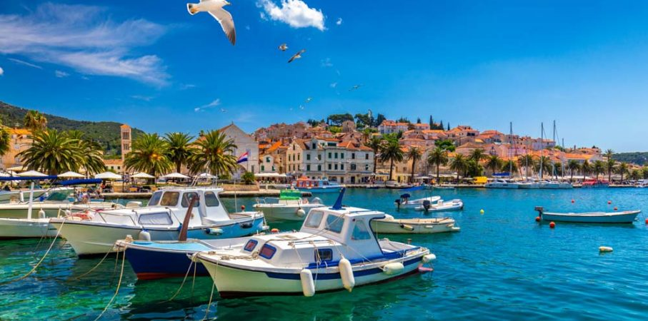

KIEDY ODWIEDZIĆ CHORWACJE? PRAKTYCZNE PORADY
Pogoda w Chorwacji - wrzesień i czerwiec najlepszym miesiącem?Kiedy jest najlepsza pogoda w Chorwacji na wakacje? Latem pogoda w Chorwacji jest bardzo upalna, zwłaszcza na obszarach niżej położonych - bywają bardzo wysokie temperatury (sięgające nawet 40°C). Optymalnym okresem wydają się wrzesień i czerwiec, kiedy temperatura nie przekracza 30°C. Ceny są wtedy znacznie niższe niż w sezonie, a liczba turystów o wiele mniejsza. To samo dotyczy maja, jednak wówczas wiele hoteli i pensjonatów czynnych tylko w sezonie letnim może jeszcze nie być otwartych.
